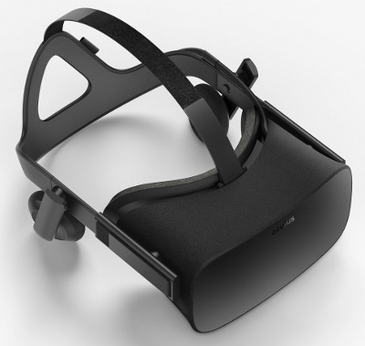
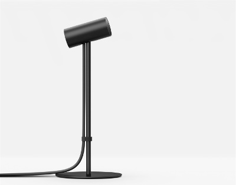
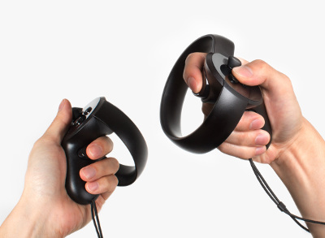

Chapter 3: The Oculus Rift

3.1 The Oculus Rift Hardware
The Oculus Rift is a head-mounted VR device which was released in its first version in 2013 by the company Oculus VR. The following section gives a short introduction into the technical characteristics and the spectrum of applications of the newest version “Oculus Rift Consumer Version 1“(2016).The headset
The core elements of the Oculus Rift are two screens with a solution of 1080×1200 pixel each, fitted into a headset. To enable the human eye to focus on the closely located screens, two pairs of lenses are arranged in front of the screens. Each screen is presenting an image of a scene from a slightly different angle. The presentation of two 2D images from different angles allows our brain to experience it as one 3D image. The image can be presented with respect to the position and motion of the headset, creating the impression that the user can look around naturally in a virtual environment. Position and motion tracking are done by a position tracker (see next section) and an “adjected reality tracker”. The “adjected reality tracker” is a combination of a gyrometer, a magnetometer and an accelerometer. All three detectors are working in three dimensions and are supposed to track even very tiny movements of the head.

The positional tracker
The position tracker is meant to track the position of the head in 3D space. This is done by Oculus’ so called “constellation tracking system” - an infrared camera that is installed to oversee the location is taking pictures of a series of infrared LEDs on the user’s headset. To provide a 360-degree tracking the headset features several LEDs in the front and back. The final position of the user’s head in real space is then processed from the infrared images by Oculus’ software.
